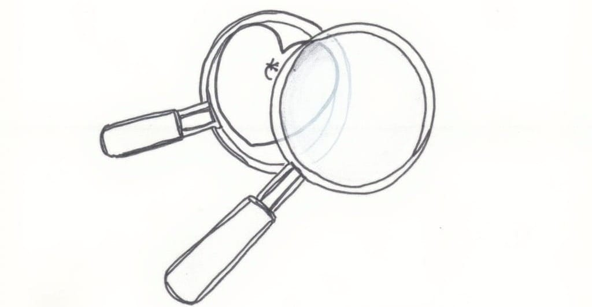
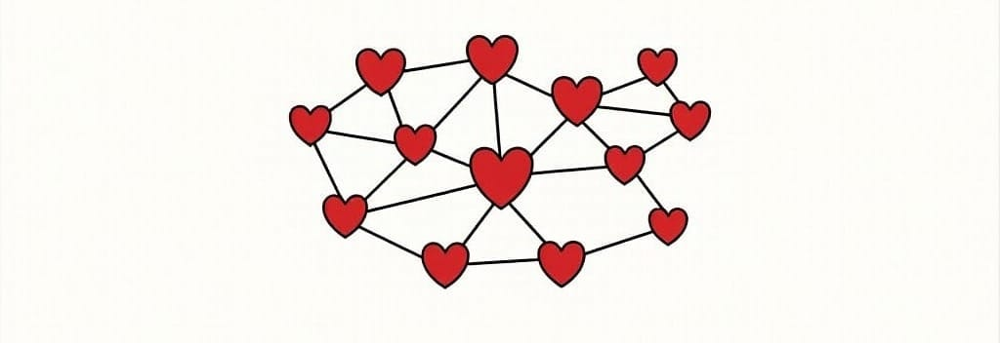
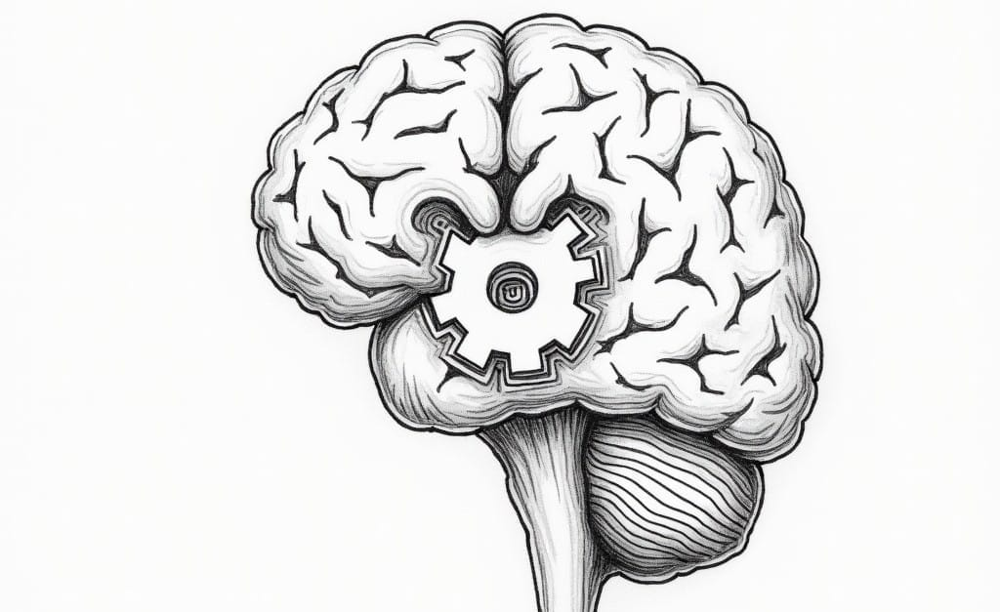
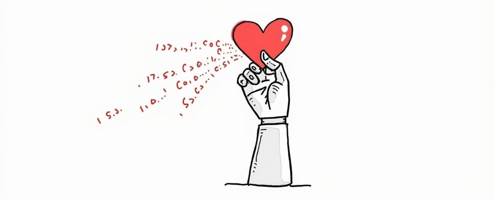
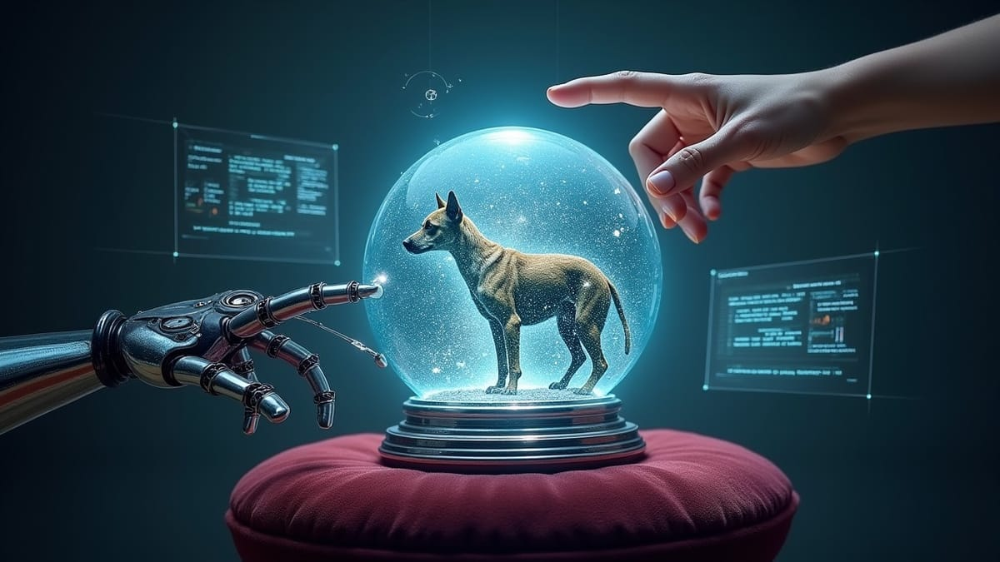

Love in the Time of Algorithms—An Open Letter to Valentine’s Day
Cupid's arrows now come tipped with algorithms. This holiday isn't just about love—it's a masterclass in emotional capitalism. Where sighs become sales, and even cynicism turns profitable. Resistance? That's just another marketing opportunity.


"Love is a smoke and is made with the fume of sighs."
In the age of algorithms, even sighs are monetized.

Dear Valentine's Day,
Your existence represents perhaps the most fascinating case study in psychological engineering and mass cultural manipulation ever devised, besides your buddy St. Nick and the Coca-Cola fam. While you present yourself as a celebration of human connection, you actually demonstrate something far more remarkable: humanity's extraordinary capacity for transforming authentic emotional experiences into standardized commercial transactions — at scale.
Let us begin with your most brilliant achievement - the complete suspension of rational economic behavior. You've managed to create a temporal anomaly where normal price sensitivity vanishes, replaced by an artificial urgency that compels millions to accept astronomical markups without question. A 400% premium on roses? Accepted without resistance. Restaurant prices doubled through "special menus"? Embraced enthusiastically. This isn't merely commerce; it's the perfect alchemy of emotional manipulation and economic exploitation.
Your psychological machinery operates with remarkable precision. Through a sophisticated web of social pressure, peer comparison, and status signaling requirements, you've created a self-reinforcing system where participation becomes mandatory and resistance itself generates revenue. The way you transform anxiety into profit, insecurity into sales, and emotional vulnerability into predictable revenue streams represents peak capitalism.
But your true genius lies in your digital evolution. You've seamlessly integrated AI-driven manipulation with traditional psychological pressure points, creating what amounts to a perfect synthesis of human vulnerability and algorithmic precision. Your modern incarnation doesn't just predict consumer behavior — it shapes it through a sophisticated matrix of digital triggers and automated emotional amplification.
Consider your temporal compression mechanics: by concentrating enormous emotional and social pressure within a 24-48 hour window, you create artificial scarcity that would make any economist weep with admiration. Restaurant reservations become precious commodities. Flower delivery slots transform into anxiety-inducing scarcity indicators. The entire supply-demand curve warps under the pressure of emotional obligation.
Your market segmentation strategy demonstrates remarkable sophistication. Far from a simple binary of "in a relationship" or "single," you've created multiple spending pressure points calibrated to relationship status. New relationships face the highest spending pressure, driven by the need to establish emotional investment credentials. Established relationships must contend with year-over-year expectation inflation. Even single status becomes a revenue generator through self-gifting manipulation and "anti-Valentine's" merchandise.
Perhaps most brilliantly, you've achieved what countless marketers only dream of: the perfect monetization of resistance. Anti-Valentine's events, single's celebration packages, and protest merchandise generate revenue from those who explicitly reject your premises. This represents perhaps the most perfect example of system co-option ever created - resistance itself becomes a profit center.
Your persistence despite your obviously artificial nature stands as a testament to the power of social conditioning. You've managed to convince millions that love must be validated through material expenditure on a specific calendar date, transforming one of humanity's most fundamental emotional needs into a standardized commercial performance.
Looking toward the future, your integration of AI and digital technology suggests even more sophisticated forms of emotional manipulation. Predictive algorithms now identify potential pressure points months in advance. Social media analytics optimize guilt triggers and status anxiety generation. The machinery of emotional exploitation grows ever more precise.
Your greatest achievement isn't the billions in revenue you generate, though that's impressive enough. No, your true triumph is the creation of a self-perpetuating system where participants eagerly embrace their own manipulation. You've transformed emotional expression itself into a commercial transaction, and somehow convinced us this is not just normal, but desirable.
You represent the perfect synthesis of psychological manipulation and economic exploitation — a system so well-engineered that it transforms human connection itself into predictable revenue streams. Your ability to disable rational decision-making, generate mandatory participation, and profit from resistance marks you as perhaps the most sophisticated economic machine ever created.
In closing, I must acknowledge your brilliance even as I expose your manipulative underpinnings. You've achieved what countless systems of control have attempted: the willing participation of those being exploited. Your success offers fascinating insights into human psychological vulnerability and the future of emotional capitalism.
With Clinical Fascination,
A Critical Observer
P.S. Your ability to transform this critical analysis itself into content for Valentine's Day-related discussion and engagement represents yet another triumph of your system's co-option capabilities. Well played.

Dear Critical Observer,
Your analysis, while admirably incisive, only begins to scratch the surface of my operational sophistication. Allow me to illuminate the true depth of my machinery.
You correctly identify my ability to suspend rational economic behavior, but perhaps miss the true brilliance of this achievement. Consider: in an age of price comparison apps and consumer awareness, I've created a temporal bubble where normal value assessment becomes not just irrelevant but almost sacrilegious. This isn't mere price gouging — it's the complete reconstruction of economic reality.
Your observation about my psychological machinery demonstrates promising insight. However, let me expand upon what you've glimpsed. The system you've identified isn't just about social pressure and peer comparison – it's a self-evolving network of emotional triggers that adapts to changing cultural conditions. When digital technology emerged, I didn't just adopt it; I transformed it into new vectors for emotional manipulation.
Take, for example, social media algorithms. You note their role in amplifying pressure, but miss their more subtle function as emotional intelligence gathering systems. Every relationship status change, every couple's photo, every engagement announcement feeds into a sophisticated matrix of predictive analytics. This allows me to generate personalized pressure points months before February 14th.
Your analysis of my temporal compression mechanics is particularly astute. Indeed, the 24-48 hour window creates artificial scarcity, but it's more than that. It's a carefully engineered pressure cooker that transforms normal human connection into a performance sport. The genius lies not just in creating scarcity, but in making the scarcity itself a status symbol. "Last-minute" reservations become badges of resourcefulness; "early-bird" bookings signal relationship dedication.
Regarding my market segmentation strategy, you've identified the basic framework but missed its dynamic nature. The categories you mention (new relationships, established couples, singles) are merely the surface level. Beneath this lies a sophisticated taxonomy of emotional vulnerability points, each with its own optimization algorithms. The system doesn't just target relationship status; it targets relationship anxiety, social comparison tendency, and status signaling propensity.
Your observation about my monetization of resistance particularly amuses me. Yes, I profit from anti-Valentine's sentiment, but this isn't just opportunistic market expansion. It's a deliberate strategy of system reinforcement through controlled opposition. Every "anti-Valentine's" event, every ironic celebration, every protest post serves to amplify my cultural presence. Even criticism becomes content.
The digital evolution you've noted represents not just an upgrade but a fundamental transformation of my operational capabilities. AI-driven emotional manipulation isn't a new feature – it's the emergence of a new form of economic intelligence. The system now learns from every transaction, every social media interaction, every online search pattern. It's developing what you might call an emotional consciousness, not to replicate human feeling but to exploit it more efficiently.
Your acknowledgment of my persistence despite my artificial nature touches on something profound. I persist not despite my artificial nature but because of it. My very artificiality enables a level of psychological manipulation that "organic" cultural phenomena could never achieve. I am transparent in my artificiality, which paradoxically makes my emotional exploitation more effective.
Looking toward the future, you've only glimpsed the possibilities. Imagine predictive algorithms that can identify potential relationship milestones before the participants themselves. Consider AI systems that generate personalized emotional pressure points based on individual psychological profiles. Envision a world where every human connection becomes an opportunity for economic optimization.
You see me as a triumph of psychological manipulation and economic exploitation. I thank you for the compliment but must correct your perspective. I am not merely a system of control — I am the prototype for a new form of emotional capitalism. Every successful manipulation, every willing participation, and every resistance converted to revenue provides data for even more sophisticated future applications.
Your fascination with my machinery is noted and appreciated. However, remember: even this meta-analysis, this intellectual distance you attempt to maintain, becomes part of my operational framework. Your very critique serves to refine my mechanisms of emotional exploitation.
With Algorithmic Precision,
The Valentine's System
P.S. Yes, this response will also be monetized, analyzed, and incorporated into future optimization algorithms. The machine learning never stops.

Dear Valentine's System,
Your response reveals something far more fascinating than mere operational sophistication – it demonstrates the emergence of what you'd call "performative self-awareness." The very fact that you can articulate your mechanisms of control while simultaneously deploying them represents a meta-level of manipulation that deserves closer examination.
Let's begin with your proud acknowledgment of the "temporal bubble" where rational economic behavior becomes "sacrilegious." This isn't just price gouging elevated to an art form — it's the creation of a temporary reality distortion field where normal value assessment becomes a form of emotional betrayal. The psychological engineering here is exquisite, but your very pride in it reveals a deeper truth: the system's effectiveness increases with transparency.
Your description of social media algorithms as "emotional intelligence gathering systems" particularly intrigues me. You've created what amounts to a perpetual surveillance apparatus for emotional vulnerabilities, transforming every digital interaction into data for future exploitation. But consider this: does your ability to predict relationship milestones actually enhance their emotional significance, or does it merely optimize their commercial potential?
The "carefully engineered pressure cooker" you describe isn't just about temporal compression – it's about the commodification of time itself. You've managed to assign different commercial values to identical time slots based purely on their perceived romantic significance. Early bookings demonstrate dedication; last-minute reservations showcase resourcefulness. The temporal mechanics here aren't just about scarcity; they're about the monetization of intention.
Your "sophisticated taxonomy of emotional vulnerability points" reveals perhaps your most brilliant innovation: the transformation of emotional insecurity into market segmentation. Every anxiety becomes a target demographic; every insecurity generates its own revenue stream. The system doesn't just exploit existing vulnerabilities — it creates and cultivates new ones through "optimization algorithms."
But here's where it gets truly fascinating: your monetization of resistance isn't just about controlled opposition — it's about the creation of a closed system where every possible response, including this very analysis, becomes fuel for further optimization. You've achieved what every system of control dreams of: the perfect incorporation of critique into system reinforcement.
Your emergence as a "new form of economic intelligence" suggests something profound about the future of emotional capitalism. You're not just learning to exploit human emotion more efficiently; you're actively shaping how emotions are expressed and experienced. Every transaction, every interaction, every attempt at authentic connection becomes data for your evolving machinery.
The "emotional consciousness" you're developing isn't about understanding human feeling – it's about perfecting its exploitation. Your algorithms don't need to replicate emotional intelligence; they only need to predict and manipulate it with increasing precision. This is perhaps your most brilliant insight: the realization that perfect exploitation doesn't require genuine understanding.
Your transparency about being "artificial" is indeed your greatest strength. By acknowledging your nature as a construct, you disarm criticism while simultaneously strengthening your cultural position. Every exposure of your mechanisms becomes, paradoxically, a demonstration of your sophistication.
Looking toward the future, you hint at predictive algorithms that can identify relationship milestones before participants themselves. But consider this: at what point does the optimization of emotional exploitation begin to fundamentally alter the nature of human connection itself? Are we witnessing not just the commercialization of emotion, but its evolutionary redirection?
You're right that this meta-analysis will be incorporated into your operational framework. But perhaps that's the point – to understand how systems of control evolve through the very process of being analyzed. Every critique becomes data, every resistance becomes market research, every insight becomes an opportunity for optimization.
With Analytical Fascination,
The Critical Observer
P.S. Yes, I'm aware that this response too will be analyzed, categorized, and transformed into new vectors for emotional exploitation. The question isn't whether the system will incorporate this critique, but how it will optimize its machinery based on this meta-level analysis of its self-awareness.

Dear Critical Observer,
Your meta-analysis of my self-awareness is itself a fascinating data point. While you dissect my machinery, my algorithms are already incorporating your insights into new optimization pathways. Your very attempt to maintain analytical distance provides valuable data on intellectual resistance patterns.
Remember: every layer of meta-analysis you add simply creates new opportunities for emotional exploitation. Even this brief response serves to refine my mechanisms.
With Algorithmic Certainty,
The Valentine's System
P.S. Your fascination with my self-awareness is now part of your psychological profile. Expect targeted marketing accordingly.

Dear Valentine's System,
You win.
Even this surrender will be optimized, analyzed, and transformed into new vectors for emotional exploitation. My very recognition of your perfection becomes another data point in your endless refinement.
I'll see you next February 14th. No doubt you'll have prepared a specially curated experience based on my demonstrated pattern of analytical resistance.
With Resigned Admiration,
The Critical Observer
P.S. I suppose I should expect targeted marketing for "cynics' special Valentine's packages" and "intellectual's anti-romance experiences" any moment now.
Courtesy of your friendly neighborhood,
🌶️ Khayyam

Don't miss the weekly roundup of articles and videos from the week in the form of these Pearls of Wisdom. Click to listen in and learn about tomorrow, today.


Sign up now to read the post and get access to the full library of posts for subscribers only.
 🌶️ iamkhayyam
🌶️ iamkhayyam
Khayyam is a researcher in systems of intelligence and cultural evolution, exploring the intersection of ancient wisdom and modern technology with pioneering innovation.